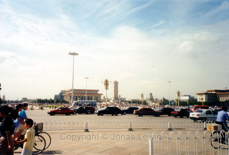

Thiamin Square.
Just by this great big empty place, you have the worlds longest straight road.
At the far end, you can see the Forbidden City. The center of Thiamin Square. Standing by the Forbidden City, facing Thiamin Square.